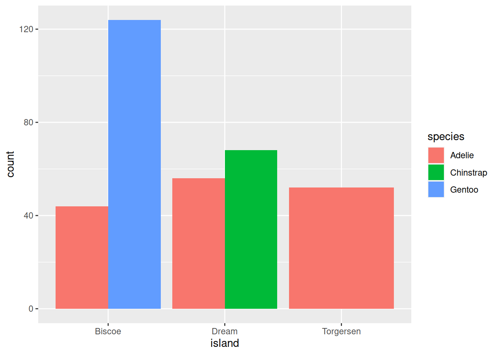

Data Focus
Modules and Zoom Notes 2–6 cover topics that are part of the data
analysis journey and are all interrelated. Each module will introduce
new content and expand on the material covered in previous modules. For
example, in Module 2 we introduce the basics of the R plotting systems.
Subsequent sessions include more advanced plotting options and
techniques.
Associated material:
Module: Module 02 - Visualising
Data
Readings:
Topics
Tabular data
- Edit in Excel
- Export to plain csv (not UTF-8)
- Column headers in first row for every column
- One row for each data record
Folder setup
- Eventually, use Projects to allow RStudio to manage metadata
- Separate folders for data files, images, scripts, Rmd, etc.
Importing a data file
- read.csv
- Set stringsAsFactors = TRUE to import categorical variables
correctly
- After we meet the tidyverse, can also use read_csv
Checking your imported data
- head
- tail
- str
- Confirm that each column is of the correct type
Selecting and using columns of data
- Select an individual column with the $ operator
Base R plots
- hist for frequency distributions
- boxplots show central tendency and variability
- formulas have the form dependent variable
~ linear model of independent variables
Plotting with ggplot
- Use function
ggplot contained in library (and package)
ggplot2
- Complex syntax based on Grammar of Graphics (from computer
science)
- Plots built in layers
Building a graph
- All plots begin with call to ggplot, passing in a data frame
- Mappings define relationships between elements of the data and
visual features on the plot
- Use function
aes to define a mapping
- Assign column names to
aes arguments x and
y to define graph axes
- Many available arguments to
aes; part of the ggplot
syntax
- Select a geometry to determine the kind of plot
(e.g. bar graph, scatterplot, line graph, etc.)
- Additional layers define axes labels, title, legends, and fonts
- Combine ggplot layer sub-commands with
+
Practice Exercises
To practice what we have learned in Module 02, we will use “Palmer’s
Penguins”, a real data set from the Palmer Station Long Term Ecological
Research program (https://allisonhorst.github.io/palmerpenguins/articles/intro.html).
These data are size measurements for three penguin species – Chinstrap,
Gentoo and Adelie – on three islands in Antarctica.
Install the package that contains the data (code shown below). Then
work through each of the exercises. If you have any questions, email us
or send us a message in MS Teams.
Access the data as shown below. These commands initialise an object
called penguins, which is a tibble, an
enhanced data frame. The additional features of tibbles will be
discussed during the next module. For these exercises simply treat
object penguins as a normal data frame.
# Install the package (do once on any computer)
install.packages("palmerpenguins")
# Load the library (do at the start of every RStudio session)
library(palmerpenguins)
# Check the data - the data frame name is penguins
str(penguins)
#> tibble [344 × 8] (S3: tbl_df/tbl/data.frame)
#> $ species : Factor w/ 3 levels "Adelie","Chinstrap",..: 1 1 1 1 1 1 1 1 1 1 ...
#> $ island : Factor w/ 3 levels "Biscoe","Dream",..: 3 3 3 3 3 3 3 3 3 3 ...
#> $ bill_length_mm : num [1:344] 39.1 39.5 40.3 NA 36.7 39.3 38.9 39.2 34.1 42 ...
#> $ bill_depth_mm : num [1:344] 18.7 17.4 18 NA 19.3 20.6 17.8 19.6 18.1 20.2 ...
#> $ flipper_length_mm: int [1:344] 181 186 195 NA 193 190 181 195 193 190 ...
#> $ body_mass_g : int [1:344] 3750 3800 3250 NA 3450 3650 3625 4675 3475 4250 ...
#> $ sex : Factor w/ 2 levels "female","male": 2 1 1 NA 1 2 1 2 NA NA ...
#> $ year : int [1:344] 2007 2007 2007 2007 2007 2007 2007 2007 2007 2007 ...
The output from str(penguins) indicates that three of
the columns in the data frame are Factors. In R, a
factor is a categorical variable, usually corresponding to an
experimental factor. Although factors look like strings, a factor is
restricted to a specific set of legal values, which R infers when the
data are loaded. The legal values are called levels,
and correspond to the different groups or conditions represented by the
factor. For example, column penguins$sex is a factor with
levels “female” and “male”.
When our data sets have factors, we often use functions
levels and table. Use Google or your favourite
text book to explore these functions. Use them to solve the next two
exercises.
What are the three different levels of the
species factor? What are the three different levels of
the island factor?
How many observations are there in the data frame for each of the
three species? How many observations are there in the data frame for
each of the three islands?
Using base R, generate a histogram showing the distribution of
body mass, collapsed across island, species and sex. How would you
describe the distribution?
Using ggplot, generate a scatterplot illustrating the
relationship between bill length and body mass, collapsed across
species, island and sex. Remember to load the library with
library(ggplot2) before first use. How would you describe
the pattern?
Modify your plot from Exercise 4 so that penguins from the
different islands are drawn in different colours. Which island seems to
have the heaviest penguins? Without looking any further at the data,
formulate at least two possible explanations for the pattern.
Using ggplot, generate a boxplot comparing body mass for the
three different species of penguin, and having each of the three boxes
drawn in a different colour. What information is missing from this
figure that was provided in Exercise 5? What information is easier to
see in this figure than in Exercise 5?
Using ggplot, duplicate this figure. You will need to research
geometry function geom_bar.

LS0tCnRpdGxlOiAiWm9vbSBOb3RlczogVmlzdWFsaXNpbmcgRGF0YSIKZGF0ZTogIlNlbWVzdGVyIDEsIDIwMjIiCm91dHB1dDoKICBodG1sX2RvY3VtZW50OgogICAgdG9jOiB0cnVlCiAgICB0b2NfZmxvYXQ6IHRydWUKICAgIHRvY19kZXB0aDogMwogICAgY29kZV9kb3dubG9hZDogdHJ1ZQogICAgY29kZV9mb2xkaW5nOiBzaG93Ci0tLQogIApgYGB7ciBzZXR1cCwgaW5jbHVkZT1GQUxTRX0KbGlicmFyeShnZ3Bsb3QyKQoKbGlicmFyeShrbml0cikKCmtuaXRyOjpvcHRzX2NodW5rJHNldCgKICBjb21tZW50ID0gIiM+IiwKICBmaWcucGF0aCA9ICJmaWd1cmVzLzAyLyIsICMgdXNlIG9ubHkgZm9yIHNpbmdsZSBSbWQgZmlsZXMKICBjb2xsYXBzZSA9IFRSVUUsCiAgZWNobyA9IFRSVUUKKQpgYGAKCj4gIyMjIyBEYXRhIEZvY3VzCiAgPgogID4gTW9kdWxlcyBhbmQgWm9vbSBOb3RlcyAyLS02IGNvdmVyIHRvcGljcyB0aGF0IGFyZSBwYXJ0IG9mIHRoZSBkYXRhIGFuYWx5c2lzIGpvdXJuZXkgYW5kIGFyZSBhbGwgaW50ZXJyZWxhdGVkLiBFYWNoIG1vZHVsZSB3aWxsIGludHJvZHVjZSBuZXcgY29udGVudCBhbmQgZXhwYW5kIG9uIHRoZSBtYXRlcmlhbCBjb3ZlcmVkIGluIHByZXZpb3VzIG1vZHVsZXMuIEZvciBleGFtcGxlLCBpbiBNb2R1bGUgMiB3ZSBpbnRyb2R1Y2UgdGhlIGJhc2ljcyBvZiB0aGUgUiBwbG90dGluZyBzeXN0ZW1zLiBTdWJzZXF1ZW50IHNlc3Npb25zIGluY2x1ZGUgbW9yZSBhZHZhbmNlZCBwbG90dGluZyBvcHRpb25zIGFuZCB0ZWNobmlxdWVzLgoKXAoKXAoKPiAjIyMjIEFzc29jaWF0ZWQgbWF0ZXJpYWw6Cj4gTW9kdWxlOiBbTW9kdWxlIDAyIC0gVmlzdWFsaXNpbmcgRGF0YV0oMDItdmlzdWFsaXNlLmh0bWwpCj4gCj4gUmVhZGluZ3M6Cj4gICAKPiAtIFtSIGZvciBEYXRhIFNjaWVuY2UgLSBDaGFwdGVyIDEyXShodHRwczovL3I0ZHMuaGFkLmNvLm56L3RpZHktZGF0YS5odG1sKQo+IC0gW1IgZm9yIERhdGEgU2NpZW5jZSAtIENoYXB0ZXIgMTFdKGh0dHBzOi8vcjRkcy5oYWQuY28ubnovZGF0YS1pbXBvcnQuaHRtbCkKPiAtIFtSIGZvciBEYXRhIFNjaWVuY2UgLSBDaGFwdGVyIDNdKGh0dHBzOi8vcjRkcy5oYWQuY28ubnovZGF0YS12aXN1YWxpc2F0aW9uLmh0bWwpCgoKIyBUb3BpY3MKCiMjIFRhYnVsYXIgZGF0YQoKLSBFZGl0IGluIEV4Y2VsCi0gRXhwb3J0IHRvIHBsYWluIGNzdiAobm90IFVURi04KQotIENvbHVtbiBoZWFkZXJzIGluIGZpcnN0IHJvdyBmb3IgZXZlcnkgY29sdW1uCi0gT25lIHJvdyBmb3IgZWFjaCBkYXRhIHJlY29yZAoKIyMgRm9sZGVyIHNldHVwCgotIEV2ZW50dWFsbHksIHVzZSBQcm9qZWN0cyB0byBhbGxvdyBSU3R1ZGlvIHRvIG1hbmFnZSBtZXRhZGF0YQotIFNlcGFyYXRlIGZvbGRlcnMgZm9yIGRhdGEgZmlsZXMsIGltYWdlcywgc2NyaXB0cywgUm1kLCBldGMuCgojIyBJbXBvcnRpbmcgYSBkYXRhIGZpbGUKCi0gcmVhZC5jc3YKLSBTZXQgc3RyaW5nc0FzRmFjdG9ycyA9IFRSVUUgdG8gaW1wb3J0IGNhdGVnb3JpY2FsIHZhcmlhYmxlcyBjb3JyZWN0bHkKLSBBZnRlciB3ZSBtZWV0IHRoZSB0aWR5dmVyc2UsIGNhbiBhbHNvIHVzZSByZWFkX2NzdgoKIyMgQ2hlY2tpbmcgeW91ciBpbXBvcnRlZCBkYXRhCgotIGhlYWQKLSB0YWlsCi0gc3RyCi0gQ29uZmlybSB0aGF0IGVhY2ggY29sdW1uIGlzIG9mIHRoZSBjb3JyZWN0IHR5cGUKCiMjIFNlbGVjdGluZyBhbmQgdXNpbmcgY29sdW1ucyBvZiBkYXRhCgotIFNlbGVjdCBhbiBpbmRpdmlkdWFsIGNvbHVtbiB3aXRoIHRoZSAkIG9wZXJhdG9yCgojIyBCYXNlIFIgcGxvdHMKCi0gaGlzdCBmb3IgZnJlcXVlbmN5IGRpc3RyaWJ1dGlvbnMKLSBib3hwbG90cyBzaG93IGNlbnRyYWwgdGVuZGVuY3kgYW5kIHZhcmlhYmlsaXR5Ci0gZm9ybXVsYXMgaGF2ZSB0aGUgZm9ybSAqZGVwZW5kZW50IHZhcmlhYmxlKiAqKn4qKiAqbGluZWFyIG1vZGVsIG9mIGluZGVwZW5kZW50IHZhcmlhYmxlcyoKCiMjIFBsb3R0aW5nIHdpdGggZ2dwbG90CgotIFVzZSBmdW5jdGlvbiBgZ2dwbG90YCBjb250YWluZWQgaW4gbGlicmFyeSAoYW5kIHBhY2thZ2UpIGdncGxvdDIKLSBDb21wbGV4IHN5bnRheCBiYXNlZCBvbiBHcmFtbWFyIG9mIEdyYXBoaWNzIChmcm9tIGNvbXB1dGVyIHNjaWVuY2UpCi0gUGxvdHMgYnVpbHQgaW4gbGF5ZXJzCgojIyBCdWlsZGluZyBhIGdyYXBoCgotIEFsbCBwbG90cyBiZWdpbiB3aXRoIGNhbGwgdG8gZ2dwbG90LCBwYXNzaW5nIGluIGEgZGF0YSBmcmFtZQotIE1hcHBpbmdzIGRlZmluZSByZWxhdGlvbnNoaXBzIGJldHdlZW4gZWxlbWVudHMgb2YgdGhlIGRhdGEgYW5kIHZpc3VhbCBmZWF0dXJlcyBvbiB0aGUgcGxvdAotIFVzZSBmdW5jdGlvbiBgYWVzYCB0byBkZWZpbmUgYSBtYXBwaW5nCi0gQXNzaWduIGNvbHVtbiBuYW1lcyB0byBgYWVzYCBhcmd1bWVudHMgYHhgIGFuZCBgeWAgdG8gZGVmaW5lIGdyYXBoIGF4ZXMKLSBNYW55IGF2YWlsYWJsZSBhcmd1bWVudHMgdG8gYGFlc2A7IHBhcnQgb2YgdGhlIGdncGxvdCBzeW50YXgKLSBTZWxlY3QgYSAqKmdlb21ldHJ5KiogdG8gZGV0ZXJtaW5lIHRoZSBraW5kIG9mIHBsb3QgKGUuZy4gYmFyIGdyYXBoLCBzY2F0dGVycGxvdCwgbGluZSBncmFwaCwgZXRjLikKLSBBZGRpdGlvbmFsIGxheWVycyBkZWZpbmUgYXhlcyBsYWJlbHMsIHRpdGxlLCBsZWdlbmRzLCBhbmQgZm9udHMKLSBDb21iaW5lIGdncGxvdCBsYXllciBzdWItY29tbWFuZHMgd2l0aCBgK2AKCiMgUHJhY3RpY2UgRXhlcmNpc2VzCgpUbyBwcmFjdGljZSB3aGF0IHdlIGhhdmUgbGVhcm5lZCBpbiBNb2R1bGUgMDIsIHdlIHdpbGwgdXNlICJQYWxtZXIncyBQZW5ndWlucyIsIGEgcmVhbCBkYXRhIHNldCBmcm9tIHRoZSBQYWxtZXIgU3RhdGlvbiBMb25nIFRlcm0gRWNvbG9naWNhbCBSZXNlYXJjaCBwcm9ncmFtIChodHRwczovL2FsbGlzb25ob3JzdC5naXRodWIuaW8vcGFsbWVycGVuZ3VpbnMvYXJ0aWNsZXMvaW50cm8uaHRtbCkuIFRoZXNlIGRhdGEgYXJlIHNpemUgbWVhc3VyZW1lbnRzIGZvciB0aHJlZSBwZW5ndWluIHNwZWNpZXMgLS0gQ2hpbnN0cmFwLCBHZW50b28gYW5kIEFkZWxpZSAtLSBvbiB0aHJlZSBpc2xhbmRzIGluIEFudGFyY3RpY2EuCgpJbnN0YWxsIHRoZSBwYWNrYWdlIHRoYXQgY29udGFpbnMgdGhlIGRhdGEgKGNvZGUgc2hvd24gYmVsb3cpLiBUaGVuIHdvcmsgdGhyb3VnaCBlYWNoIG9mIHRoZSBleGVyY2lzZXMuIElmIHlvdSBoYXZlIGFueSBxdWVzdGlvbnMsIGVtYWlsIHVzIG9yIHNlbmQgdXMgYSBtZXNzYWdlIGluIE1TIFRlYW1zLgoKQWNjZXNzIHRoZSBkYXRhIGFzIHNob3duIGJlbG93LiBUaGVzZSBjb21tYW5kcyBpbml0aWFsaXNlIGFuIG9iamVjdCBjYWxsZWQgKipwZW5ndWlucyoqLCB3aGljaCBpcyBhICoqdGliYmxlKiosIGFuIGVuaGFuY2VkIGRhdGEgZnJhbWUuIFRoZSBhZGRpdGlvbmFsIGZlYXR1cmVzIG9mIHRpYmJsZXMgd2lsbCBiZSBkaXNjdXNzZWQgZHVyaW5nIHRoZSBuZXh0IG1vZHVsZS4gRm9yIHRoZXNlIGV4ZXJjaXNlcyBzaW1wbHkgdHJlYXQgb2JqZWN0ICoqcGVuZ3VpbnMqKiBhcyBhIG5vcm1hbCBkYXRhIGZyYW1lLgoKYGBge3IgaW5zdGFsbCwgZXZhbD1GQUxTRSwgd2FybmluZz1GQUxTRSwgbWVzc2FnZT1GQUxTRX0KCiMgSW5zdGFsbCB0aGUgcGFja2FnZSAoZG8gb25jZSBvbiBhbnkgY29tcHV0ZXIpCmluc3RhbGwucGFja2FnZXMoInBhbG1lcnBlbmd1aW5zIikKYGBgCgpgYGB7ciBsb2FkfQojIExvYWQgdGhlIGxpYnJhcnkgKGRvIGF0IHRoZSBzdGFydCBvZiBldmVyeSBSU3R1ZGlvIHNlc3Npb24pCmxpYnJhcnkocGFsbWVycGVuZ3VpbnMpCgojIENoZWNrIHRoZSBkYXRhIC0gdGhlIGRhdGEgZnJhbWUgbmFtZSBpcyBwZW5ndWlucwpzdHIocGVuZ3VpbnMpCmBgYAoKVGhlIG91dHB1dCBmcm9tIGBzdHIocGVuZ3VpbnNgKSBpbmRpY2F0ZXMgdGhhdCB0aHJlZSBvZiB0aGUgY29sdW1ucyBpbiB0aGUgZGF0YSBmcmFtZSBhcmUgKipGYWN0b3JzKiouIEluIFIsIGEgZmFjdG9yIGlzIGEgY2F0ZWdvcmljYWwgdmFyaWFibGUsIHVzdWFsbHkgY29ycmVzcG9uZGluZyB0byBhbiBleHBlcmltZW50YWwgZmFjdG9yLiBBbHRob3VnaCBmYWN0b3JzIGxvb2sgbGlrZSBzdHJpbmdzLCBhIGZhY3RvciBpcyByZXN0cmljdGVkIHRvIGEgc3BlY2lmaWMgc2V0IG9mIGxlZ2FsIHZhbHVlcywgd2hpY2ggUiBpbmZlcnMgd2hlbiB0aGUgZGF0YSBhcmUgbG9hZGVkLiBUaGUgbGVnYWwgdmFsdWVzIGFyZSBjYWxsZWQgKipsZXZlbHMqKiwgYW5kIGNvcnJlc3BvbmQgdG8gdGhlIGRpZmZlcmVudCBncm91cHMgb3IgY29uZGl0aW9ucyByZXByZXNlbnRlZCBieSB0aGUgZmFjdG9yLiBGb3IgZXhhbXBsZSwgY29sdW1uIGBwZW5ndWlucyRzZXhgIGlzIGEgZmFjdG9yIHdpdGggbGV2ZWxzICJmZW1hbGUiIGFuZCAibWFsZSIuIAoKV2hlbiBvdXIgZGF0YSBzZXRzIGhhdmUgZmFjdG9ycywgd2Ugb2Z0ZW4gdXNlIGZ1bmN0aW9ucyBgbGV2ZWxzYCBhbmQgYHRhYmxlYC4gVXNlIEdvb2dsZSBvciB5b3VyIGZhdm91cml0ZSB0ZXh0IGJvb2sgdG8gZXhwbG9yZSB0aGVzZSBmdW5jdGlvbnMuIFVzZSB0aGVtIHRvIHNvbHZlIHRoZSBuZXh0IHR3byBleGVyY2lzZXMuCgoxLiBXaGF0IGFyZSB0aGUgdGhyZWUgZGlmZmVyZW50IGxldmVscyBvZiB0aGUgKipzcGVjaWVzKiogZmFjdG9yPyBXaGF0IGFyZSB0aGUgdGhyZWUgZGlmZmVyZW50IGxldmVscyBvZiB0aGUgKippc2xhbmQqKiBmYWN0b3I/CgpgYGB7ciBsZXZlbHMsIGVjaG89RkFMU0UsIGV2YWw9RkFMU0V9CmxldmVscyhwZW5ndWlucyRzcGVjaWVzKQpsZXZlbHMocGVuZ3VpbnMkaXNsYW5kKQpgYGAKCjIuICBIb3cgbWFueSBvYnNlcnZhdGlvbnMgYXJlIHRoZXJlIGluIHRoZSBkYXRhIGZyYW1lIGZvciBlYWNoIG9mIHRoZSB0aHJlZSBzcGVjaWVzPyBIb3cgbWFueSBvYnNlcnZhdGlvbnMgYXJlIHRoZXJlIGluIHRoZSBkYXRhIGZyYW1lIGZvciBlYWNoIG9mIHRoZSB0aHJlZSBpc2xhbmRzPwoKYGBge3IgdGFibGUsIGVjaG89RkFMU0UsIGV2YWw9RkFMU0V9CnRhYmxlKHBlbmd1aW5zJHNwZWNpZXMpCnRhYmxlKHBlbmd1aW5zJGlzbGFuZCkKYGBgCgozLiBVc2luZyBiYXNlIFIsIGdlbmVyYXRlIGEgaGlzdG9ncmFtIHNob3dpbmcgdGhlIGRpc3RyaWJ1dGlvbiBvZiBib2R5IG1hc3MsIGNvbGxhcHNlZCBhY3Jvc3MgaXNsYW5kLCBzcGVjaWVzIGFuZCBzZXguIEhvdyB3b3VsZCB5b3UgZGVzY3JpYmUgdGhlIGRpc3RyaWJ1dGlvbj8KCmBgYHtyIGhpc3QsIGVjaG89RkFMU0UsIGV2YWw9RkFMU0V9Cmhpc3QocGVuZ3VpbnMkYm9keV9tYXNzX2cpCmBgYAoKNC4gVXNpbmcgZ2dwbG90LCBnZW5lcmF0ZSBhIHNjYXR0ZXJwbG90IGlsbHVzdHJhdGluZyB0aGUgcmVsYXRpb25zaGlwIGJldHdlZW4gYmlsbCBsZW5ndGggYW5kIGJvZHkgbWFzcywgY29sbGFwc2VkIGFjcm9zcyBzcGVjaWVzLCBpc2xhbmQgYW5kIHNleC4gUmVtZW1iZXIgdG8gbG9hZCB0aGUgbGlicmFyeSB3aXRoIGBsaWJyYXJ5KGdncGxvdDIpYCBiZWZvcmUgZmlyc3QgdXNlLiBIb3cgd291bGQgeW91IGRlc2NyaWJlIHRoZSBwYXR0ZXJuPwoKYGBge3Igc2NhdHRlcnBsb3QsIGVjaG89RkFMU0UsIGluY2x1ZGU9RkFMU0V9CgpsaWJyYXJ5KGdncGxvdDIpCgpnZ3Bsb3QoZGF0YSA9IHBlbmd1aW5zKSArCiAgZ2VvbV9wb2ludChtYXBwaW5nID0gYWVzKHggPSBiaWxsX2xlbmd0aF9tbSwgeSA9IGJvZHlfbWFzc19nKSkKCmBgYAoKNS4gTW9kaWZ5IHlvdXIgcGxvdCBmcm9tIEV4ZXJjaXNlIDQgc28gdGhhdCBwZW5ndWlucyBmcm9tIHRoZSBkaWZmZXJlbnQgaXNsYW5kcyBhcmUgZHJhd24gaW4gZGlmZmVyZW50IGNvbG91cnMuIFdoaWNoIGlzbGFuZCBzZWVtcyB0byBoYXZlIHRoZSBoZWF2aWVzdCBwZW5ndWlucz8gV2l0aG91dCBsb29raW5nIGFueSBmdXJ0aGVyIGF0IHRoZSBkYXRhLCBmb3JtdWxhdGUgYXQgbGVhc3QgdHdvIHBvc3NpYmxlIGV4cGxhbmF0aW9ucyBmb3IgdGhlIHBhdHRlcm4uCgpgYGB7ciBjb2xvciwgZWNobz1GQUxTRSwgZXZhbD1GQUxTRX0KZ2dwbG90KGRhdGEgPSBwZW5ndWlucykgKwogIGdlb21fcG9pbnQobWFwcGluZyA9IGFlcyh4ID0gYmlsbF9sZW5ndGhfbW0sIHkgPSBib2R5X21hc3NfZywgY29sb3IgPSBpc2xhbmQpKQoKIyBQb3NzaWJsZSBleHBsYW5hdGlvbnM6IDEpIE1vcmUgZm9vZCBvbiB0aGF0IGlzbGFuZCAyKSBCaWdnZXIgc3BlY2llcyBvZiBwZW5ndWluIG9uIHRoYXQgaXNsYW5kCgpgYGAKCjYuIFVzaW5nIGdncGxvdCwgZ2VuZXJhdGUgYSBib3hwbG90IGNvbXBhcmluZyBib2R5IG1hc3MgZm9yIHRoZSB0aHJlZSBkaWZmZXJlbnQgc3BlY2llcyBvZiBwZW5ndWluLCBhbmQgaGF2aW5nIGVhY2ggb2YgdGhlIHRocmVlIGJveGVzIGRyYXduIGluIGEgZGlmZmVyZW50IGNvbG91ci4gV2hhdCBpbmZvcm1hdGlvbiBpcyBtaXNzaW5nIGZyb20gdGhpcyBmaWd1cmUgdGhhdCB3YXMgcHJvdmlkZWQgaW4gIEV4ZXJjaXNlIDU/IFdoYXQgaW5mb3JtYXRpb24gaXMgZWFzaWVyIHRvIHNlZSBpbiB0aGlzIGZpZ3VyZSB0aGFuIGluIEV4ZXJjaXNlIDU/CgpgYGB7ciBnZ3Bsb3RfYm94cGxvdCwgZWNobz1GQUxTRSwgZXZhbD1GQUxTRX0KZ2dwbG90KGRhdGEgPSBwZW5ndWlucykgKwogIGdlb21fYm94cGxvdChtYXBwaW5nID0gYWVzKHggPSBpc2xhbmQgLCB5ID0gYm9keV9tYXNzX2csIGNvbG91ciA9IGlzbGFuZCkpCgpgYGAKCjcuIFVzaW5nIGdncGxvdCwgZHVwbGljYXRlIHRoaXMgZmlndXJlLiBZb3Ugd2lsbCBuZWVkIHRvIHJlc2VhcmNoIGdlb21ldHJ5IGZ1bmN0aW9uIGBnZW9tX2JhcmAuCgpgYGB7ciBiYXJwbG90X3dpdGhfZmlsbF9hbmRfZG9kZ2UsIGVjaG89RkFMU0V9CmdncGxvdChkYXRhID0gcGVuZ3VpbnMpICsKICBnZW9tX2JhcihtYXBwaW5nID0gYWVzKHggPSBpc2xhbmQsIGZpbGw9c3BlY2llcyksIHBvc2l0aW9uPSJkb2RnZSIpCmBgYAoKXAo=